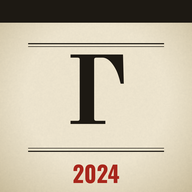

Подписка. Установите газету на телефон — она будет открываться со своего значка, как приложение, вместе с кинохроникой и без интернета.
Немое кино: путешествие сквозь века — от викингов до комиссаров. За роялем — тапёр.

Газета-приложение · 2024
Установите её на телефон: газета и кинохроника будут открываться со своего значка, как обычное приложение, и без интернета.
Покажите код героиням репортажа: пусть наведут на него камеру телефона — газета откроется в Safari или Chrome, там кнопка «Установить приложение».